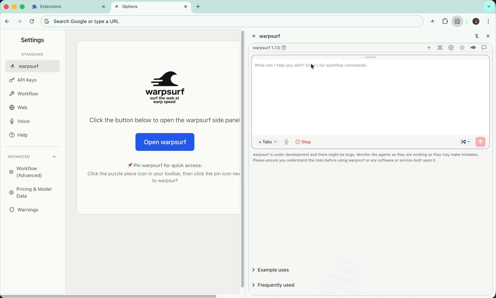
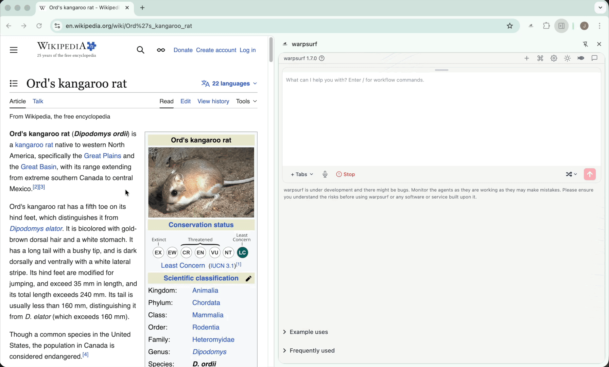
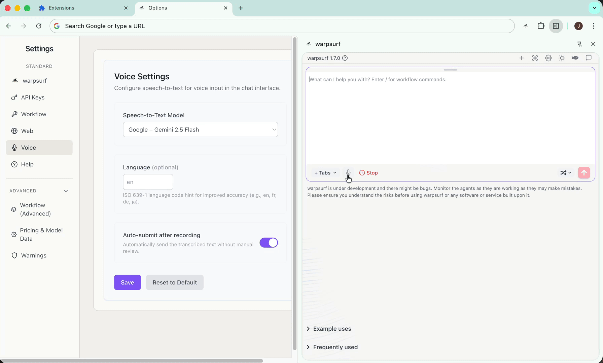
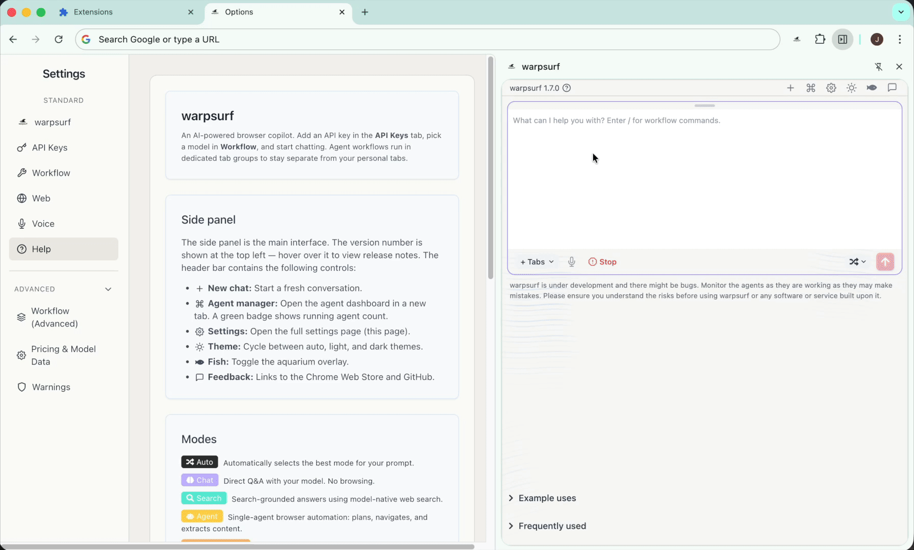

An open-source AI browser copilot for Chrome. Chat, search the web, or deploy autonomous agents — with voice and multi-agent orchestration.
The browser is the door to the internet — it should be open and accessible. Warpsurf provides a model-agnostic AI copilot that makes complex workflows simple while keeping your data local. Bring your own API keys from any supported provider.
For browser automation to be useful, it needs to be fast — enabling "warpsurfing". With intelligent routing, parallel multi-agent execution, and the fastest models available, we're getting there.
Warpsurf has been built as an open source community tool — open to contributions and critique. We want to grow the browser automation ecosystem by finding bugs, useful features, and new use cases.
Safety: Warpsurf is a research project under active development. Browser automation carries inherent risks. Use the URL firewall, monitor agents in real-time, use capped API keys, and use warpsurf at your own risk.



